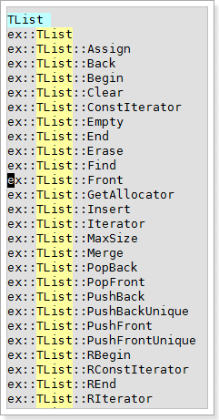

use sg, gg and ] everywhere
I never say that <leader>sg,<leader>gg and <leader>] operations can only used in edit-window, but most user always think at that way. It is encourage to use these operations in other window, and it can bring more convenient. For example you use <leader>] to watch the define of “CPhysicalFile” in exTagSelect window, and it lists:

And you see that in define 3, there have a IFile which is the parent of CPhysicalFile and you can direct watch its define by use <leader>] on it. And here is the result:

Nothing but the key word “EX_DLL_ENTRY” interest you, and you want to see where it is been used, so you start a globa search on it by <leader>gg. If nothing you want, may be you can open the exTagSelect window, and press <leader>sg on “IFile” keyword to see all its members. And that is how you jump here and there by only these three operations.
use sg to check class members
When you use <leader>sg in a key word which is a class name, it always bring you a list of the class and its member and this is the fast way to browse what is in that class. But remmeber, it only shows the member on current class, not smart enough to shows inherits members. Here is what I get when I use <leader>sg in a class named “TList”

use sg to check a member in different classes
Unlike browsing members in a class, the tip let you browsing a member in different classes. For example, you have a TList class, and you use <leader>sg browse all its members, and you may have the result:
Now you may want to see how many classes have PushBack function, you can move your cursor to “PushBack”, and then use <leader>sg, the result should be:

And let’s the way you clear see interfaces or members in common.
use the whole symbol jump instead of ] jump
As we know <leader>] will list all possible tags, and for example we use <leader>] on “PushBack” keywords, and it will list all matched tags which in several classes like TArray, TBitArray, TList, TString…. as the picture shows:
But may be you just like to watch PushBack in TArray, so you have two way, one is type :TS TArray::PushBack to get the matched results, the other way is use exSymbolTable list PushBack member first, and search “TArray” key word and press <enter> in the line: “TArray::PushBack” to trigger :TS parse the line. As show as below:

This also make exTagSelect search the key word more efficient, and is the recommemd way to search tags.
gg then gd r to get the whole word as result
We know <leader>gg use partial match to search a word in the whole project, which means you search “CClassTest” keyword, it may list “CClassTest”, “CClassTestFoo”, “CClassTestBar” … And you have two way to list just “CClassTest”, the first one as we know is use :GSW to search the whole word in the project, But there have a lazy way :), after you use <leader>gg list some results, your cursor always on the {title} of the listed result, and you just need to press <gd>, and then press <leader>r. the <gd> operations in vim will help you go to the local declaration, but it brings you another effect which will apply <{cword}> search pattern and that is what we want as the filter pattern for <leader>r. The picture below shows how this works:
get prev/next search results in global search by “u” or “ctrl-r”
Some times, after several global search, you probably need the search results list before, use the <ctrl-r> to undo and redo the search result which will shows you the history :P. Since the search result have a {title}, it is easy to confirm which one is you need.
use highlight 1,2,3,4 in :substitute
There have a secret when you use <a-1>, <a-2>, <a-3>, <a-4> for highligting. It will save the highlight word in register “q”, “w”, “e”, “r”. Look at your keyboard you will find the 1,2,3,4 and q,w,e,r are a one-to-one relationship.
The q,e register will keep the 1,3 highlight word as pattern \<Cword\> in it, but the w,r register only keep the word.
Based on the design above, it is easy to apply substitute method in the highlights. Which means you can first highlight “word1” use hl1, and highlight “word2” use hl2. The “word1” will be the pattern, and “word2” will be the word you disired to change to. Then you type :%s/<ctrl-r>q/<ctrl-r>w/g which will change “word1” to “word2”. Same as highlight 3 and highlight 4.